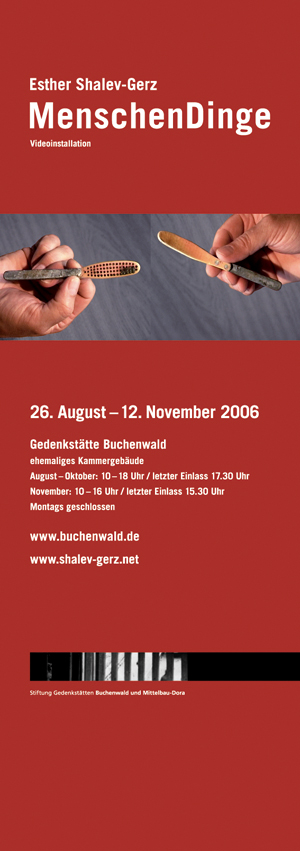

"MenschenDinge", 2006. Buchenwald Memorial | Esther Shalev-Gerz | August 25 - November 12, 2006 The Human Aspect of Objects MenschenDinge A Video Installation Curated by Naomi Tereza Salmon " Certain people wish that art would indelibly inscribe the memory of the horrors of the century. Others want it to help people today to understand each other in the diversity of their cultures. Others explain to us that art today produces - or should produce -new forms of social relationships for everyone, rather than works for art-lovers. But art does not work in order to make contemporaries responsible with regard to the past, or in order to construct better relations between different communities. It is an exercise of such responsibility or of such construction, insofar as it takes in its own equality the different kinds of art that produce objects and images, of resistance and of memory. It does not disintegrate into social relations. It constructs effective forms of community: communities between objects and images, between images and voices, between faces and words that weave relationships between pasts and a present, between faraway spaces and a place of exhibition. These communities only assemble at the cost of separating, and only get closer at the cost of creating distance. But separating and creating distance also means placing words, images and things into a wider community of acts of thought and creation, of speaking and listening which call and respond to each other. It does not involve developing "correct" feelings among spectators but inviting them to enter the continuous process of creation of these sensitive communities. It does not involve proclaiming that everyone is an artist, but saying that art lives off art that it alternately transforms and creates. " Jacques Rancière on the work of Esther Shalev-Gerz in the catalogue of MenschenDinge/ The human aspect of objects How can the power to imagine historical realities be retained when the survivors of the National Socialist concentration camps are dying out? Who or what will take their place in speaking within the great silence? Among other things, the objects, their objects, that remain or have remained in the soil of the camps. More than twenty thousand objects have been recovered from the soil of Buchenwald - shreds, fragments, evidence of the break in civilization, tangible memories of annihilated existence, but also testimony to attempted self-preservation and resistance. On five monitors, Esther Shalev-Gerz shows five people who have become very close to these objects, five people speaking about their encounters with the objects. In exemplary fashion, she thus gives scope to words evoked as much by the material presence of history in the objects as by the irrecoverable absence, the irreversible loss which surrounds them. Paradigmatically she explores the form post-memorial memory could take. A native of Vilnius, Lithuania who grew up in Israel, Esther Shalev-Gerz has lived and worked in Paris since 1984. She is internationally recognised for her seminal contributions to the field of art in the public realm and her consistent investigation into the nature of democracy, cultural memory and the politics of public space. For over 20 years her work has focused on interventions and projects in public space, taking the form of collaboration and exchange with the audience. She captures political implications and social representations in the places where they are inscribed into personal and collective memory, as seen in her works for the public realm, in her installations and in her photographic and cinematographic. Esther Shalev-Gerz is professor at the Valand Art School/ University of Göteborg (Sweden) since 2003. The exhibition will open on Friday, August 25, 2006 at 5:00 pm in the depot of the former Buchenwald Concentration Camp (2nd upper level). At about 7:00 pm a shuttle service will be provided to the Weimar Hall, where the concert "Gedächtnis Buchenwald" (Memory Buchenwald) will begin at 8:00 pm. The exhibition will be on view until November 12, 2006. www.shalev-gerz.net - www.buchenwald.de  Close Window All content copyright 2006 Naomi Tereza Salmon - all rights reserved |